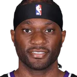

His teams won one title, with the 2025-26 New York Knicks. In his 292 games for 1 team over 5 seasons they went 170–122 (58.2%), +48 games over .500, with an average final finish of 8.0. The biggest one-season rise in his career: the New York Knicks went from #21 in 2021-22 to #6 in 2022-23.
Jump to: Record by opponent · Season by season · Teammate help
Compare Miles McBride with…
Final NBA finish, season by season
Title Finals Other playoffs Missed playoffs. #1 = champion; the dashed line is last place that season. Each point opens that season's final standings.
All 30 teams ranked in 2025-26, his best finish (#1)Teammate help
 Jalen Brunson22.03 seasons
Jalen Brunson22.03 seasons Julius Randle4.02 seasons
Julius Randle4.02 seasons Karl-Anthony Towns4.02 seasons
Karl-Anthony Towns4.02 seasons
Career
Career records (W–L, W − L, with and without) include 2026-27 games through Nov. 19, 2026; season counts and finishes are through 2025-26. Each card opens its board in the same scope. How we count.

Latest completed seasons
2026-27 so far
Games through Nov. 19, 2026, the last game in the nightly data. These games are already in his career records above (W–L, win %, W − L, with and without, all marked "incl. 2026-27"). Season counts, final finishes and teammate help use completed seasons through 2025-26; 2026-27 joins them when the season ends.
| Team | His games | With him | Without him | Gap | On/off per 100 | Started / bench | Close games |
|---|---|---|---|---|---|---|---|
| 15 | 9–6 60.0% | N/A | N/A | −7.1 | N/A / 9–6 | 1–4 |
Season by season
Newest first; every header sorts. Final NBA finish is the team's rank among all teams that season (#1 = champion) and opens that season's standings. "Without him" uses the team-season window; the span line counts only the games between his first and last game for the team.
| 2025-26 | #1 of 30 | 53–29 64.6% | Title 4–1 | 41 of 82 | 25–16 61.0% | 28–13 68.3%span: 28–13, gap −7.3 | −7.3 | |
| 2024-25 | #3 of 30 | 51–31 62.2% | Lost conf finals 2–4 | 64 of 82 | 39–25 60.9% | 12–6 66.7%span: 12–6, gap −5.7 | −5.7 | |
| 2023-24 | #9 of 30 | 50–32 61.0% | Lost 1st round 3–4 | 68 of 82 | 42–26 61.8% | 8–6 57.1%span: 7–5, gap +3.4 | +4.6 | |
| 2022-23 | #6 of 30 | 47–35 57.3% | Lost conf semis 2–4 | 64 of 82 | 36–28 56.2% | 11–7 61.1%span: 11–6, gap −8.5 | −4.9 | |
| 2021-22 | #21 of 30 | 37–45 45.1% | Missed playoffs | 40 of 82 | 19–21 47.5% | 18–24 42.9%span: 16–24, gap +7.5 | +4.6 |
On/off, starts and close games
From the lineup data, 1996-97 on. On/off is net points per 100 possessions with him on the floor minus off, a different unit from the win-rate gaps. Started and off the bench are team records in those games; close games are those within 5 points in the last 5 minutes with him on the floor.
Teammate help by season
Two separate numbers per season, each with every teammate that adds to it. Help this season = Teammates Score points for honors won that season by teammates who shared a game with him. Help coming in = the same teammates' honors from the season before. How help works.
- 2026-27
 New YorkHelp this season: pending (honors are awarded after the season)
New YorkHelp this season: pending (honors are awarded after the season)Help coming in (2025-26 honors of teammates he has played with so far): 15.5 = 14 Jalen Brunson + 1 Karl-Anthony Towns + 0.5 OG Anunoby
- 2025-26New York
Jalen Brunson Finals MVPAll-NBA 2ndAll-Star1436 gKarl-Anthony Towns All-Star137 g
 OG Anunoby All-Def 2nd0.532 g
OG Anunoby All-Def 2nd0.532 g
Help this season: 15.5 = 14 Jalen Brunson + 1 Karl-Anthony Towns + 0.5 OG Anunoby
More: help coming in and other teammates
Help coming in (teammates' honors the season before): 7 = 4 Jalen Brunson + 3 Karl-Anthony Towns
Other teammates (no honors that season): Mikal Bridges 41 g, Jordan Clarkson 39 g, Guerschon Yabusele 33 g, Mohamed Diawara 31 g, Josh Hart 31 g, Tyler Kolek 30 g, Mitchell Robinson 30 g, Ariel Hukporti 26 g, Landry Shamet 21 g, Pacome Dadiet 18 g, Kevin McCullar 9 g, Trey Jemison 6 g, Jose Alvarado 4 g, Tosan Evbuomwan 3 g and 2 more
- 2024-25New York
Jalen Brunson All-NBA 2ndAll-Star456 gKarl-Anthony Towns All-NBA 3rdAll-Star357 g
Help this season: 7 = 4 Jalen Brunson + 3 Karl-Anthony Towns
More: help coming in and other teammates
Help coming in (teammates' honors the season before): 5 = 4 Jalen Brunson + 1 Karl-Anthony Towns
Other teammates (no honors that season): Mikal Bridges 64 g, Josh Hart 59 g, Cameron Payne 58 g, OG Anunoby 56 g, Precious Achiuwa 44 g, Landry Shamet 37 g, Jericho Sims 31 g, Tyler Kolek 27 g, Ariel Hukporti 23 g, Matt Ryan 16 g, Jacob Toppin 12 g, Mitchell Robinson 12 g, Pacome Dadiet 11 g, Delon Wright 7 g and 4 more
- 2023-24New York
Jalen Brunson All-NBA 2ndAll-Star463 gJulius Randle All-Star133 g
Help this season: 5 = 4 Jalen Brunson + 1 Julius Randle
More: help coming in and other teammates
Help coming in (teammates' honors the season before): 3.5 = 3 Julius Randle + 0.5 OG Anunoby
Other teammates (no honors that season): Donte DiVincenzo 67 g, Josh Hart 67 g, Isaiah Hartenstein 62 g, Precious Achiuwa 48 g, Jericho Sims 42 g, Quentin Grimes 32 g, Bojan Bogdanovic 28 g, Alec Burks 22 g, Mitchell Robinson 22 g, OG Anunoby 22 g, Ryan Arcidiacono 20 g, Immanuel Quickley 17 g, DaQuan Jeffries 17 g, Malachi Flynn 14 g and 9 more
- 2022-23New York
Julius Randle All-NBA 3rdAll-Star359 g
Help this season: 3 = 3 Julius Randle
More: help coming in and other teammates
Help coming in (teammates' honors the season before): 0
Other teammates (no honors that season): Isaiah Hartenstein 64 g, Immanuel Quickley 63 g, Quentin Grimes 60 g, RJ Barrett 55 g, Jalen Brunson 50 g, Obi Toppin 49 g, Mitchell Robinson 47 g, Jericho Sims 45 g, Josh Hart 19 g, Evan Fournier 18 g, Derrick Rose 15 g, Sviatoslav Mykhailiuk 13 g, Ryan Arcidiacono 11 g, Cam Reddish 8 g and 1 more
- 2021-22New YorkHelp this season: 0, no honored teammate
More: help coming in
Help coming in (teammates' honors the season before): 4.375 = 4.25 Julius Randle + 0.125 Immanuel Quickley
Record against each opponent
- Most playoff series against one franchise: 2 against the Philadelphia 76ers, 2–0 in series and 8–2 in games.
Regular season, through 2025-26 (2026-27 games not included): 277 games, 161–116, against 29 franchises.
Grouped by franchise (named as today); game lists keep each team's name that season. Filters and the tab are kept in the URL, so a filtered view can be shared.
| Games list | |||||||
|---|---|---|---|---|---|---|---|
| 15 | 10–5 | 66.7% | +5 | N/A | 2021-22 to 2025-26 | ||
| 14 | 6–8 | 42.9% | −2 | 1–0 (4–2 in games) | 2021-22 to 2025-26 | ||
| 14 | 10–4 | 71.4% | +6 | N/A | 2021-22 to 2025-26 | ||
| 13 | 9–4 | 69.2% | +5 | N/A | 2021-22 to 2025-26 | ||
| 13 | 8–5 | 61.5% | +3 | N/A | 2021-22 to 2025-26 | ||
| 13 | 8–5 | 61.5% | +3 | 2–0 (8–2 in games) | 2021-22 to 2025-26 | ||
| 12 | 6–6 | 50.0% | 0 | 1–0 (4–2 in games) | 2021-22 to 2025-26 | ||
| 12 | 8–4 | 66.7% | +4 | 1–0 (4–2 in games) | 2021-22 to 2025-26 | ||
| 12 | 7–5 | 58.3% | +2 | 0–2 (5–8 in games) | 2021-22 to 2024-25 | ||
| 12 | 7–5 | 58.3% | +2 | 0–1 (1–3 in games) | 2021-22 to 2025-26 | ||
| 12 | 8–4 | 66.7% | +4 | N/A | 2021-22 to 2025-26 | ||
| 11 | 6–5 | 54.5% | +1 | 2–0 (7–1 in games) | 2021-22 to 2025-26 | ||
| 11 | 5–6 | 45.5% | −1 | N/A | 2021-22 to 2025-26 | ||
| 10 | 8–2 | 80.0% | +6 | N/A | 2021-22 to 2025-26 | ||
| 10 | 9–1 | 90.0% | +8 | N/A | 2021-22 to 2025-26 | ||
| 9 | 3–6 | 33.3% | −3 | N/A | 2021-22 to 2025-26 | ||
| 8 | 2–6 | 25.0% | −4 | N/A | 2021-22 to 2025-26 | ||
| 8 | 5–3 | 62.5% | +2 | N/A | 2021-22 to 2025-26 | ||
| 8 | 5–3 | 62.5% | +2 | N/A | 2021-22 to 2025-26 | ||
| 8 | 3–5 | 37.5% | −2 | N/A | 2021-22 to 2025-26 | ||
| 8 | 4–4 | 50.0% | 0 | 1–0 (4–1 in games) | 2021-22 to 2025-26 | ||
| 7 | 5–2 | 71.4% | +3 | N/A | 2021-22 to 2025-26 | ||
| 7 | 6–1 | 85.7% | +5 | N/A | 2021-22 to 2025-26 | ||
| 6 | 2–4 | 33.3% | −2 | N/A | 2021-22 to 2025-26 | ||
| 6 | 4–2 | 66.7% | +2 | N/A | 2022-23 to 2025-26 | ||
| 5 | 3–2 | 60.0% | +1 | N/A | 2021-22 to 2024-25 | ||
| 5 | 1–4 | 20.0% | −3 | N/A | 2022-23 to 2024-25 | ||
| 5 | 1–4 | 20.0% | −3 | N/A | 2021-22 to 2025-26 | ||
| 3 | 2–1 | 66.7% | +1 | N/A | 2021-22 to 2025-26 |
Rows add up to his career record in his games. A playoff series counts when he played in it; early round-robin games show as games only. How we count.
Playoffs, with and without him
| 2025-26 | Won the title 4–1 over | #1 of 30 | 19 of 19 | 16–3 84.2% | N/A | N/A | |
| 2024-25 | Lost in the conference finals 2–4 to | #3 of 30 | 18 of 18 | 10–8 55.6% | N/A | N/A | |
| 2023-24 | Lost in the first round 3–4 to | #9 of 30 | 13 of 13 | 7–6 53.8% | N/A | N/A | |
| 2022-23 | Lost in the conference semifinals 2–4 to | #6 of 30 | 8 of 11 | 4–4 50.0% | 2–1 66.7% | −16.7 |
Arrival and departure
Team wins per 82 games the season before he arrived vs his first season there, and his last season vs the season after he left. He leaves a team only when his next season with games is for another team (or he never plays again); whole seasons he missed and came back from are one "Missed" row with the team's record without him. Per 82 so short seasons compare fairly. These are team records, not a measure of what he did.
| Debut | 2021-22 | 2020-21: 41–31 46.7 per 82 | 2021-22: 37–45 37.0 per 82 | −9.7 wins |
Best duos
Team record in regular-season games both played, top 10 by win %, at least 50 games together.
- OG Anunoby
71–39 64.5%

Precious Achiuwa 59–33 64.1% Cameron Payne
37–21 63.8%
Cameron Payne
37–21 63.8% Landry Shamet
37–21 63.8%
Landry Shamet
37–21 63.8% Josh Hart
111–65 63.1%
Josh Hart
111–65 63.1%- Jalen Brunson
129–76 62.9%
- Karl-Anthony Towns
59–35 62.8%
 Donte DiVincenzo
42–25 62.7%
Donte DiVincenzo
42–25 62.7% Mikal Bridges
64–41 61.0%
Mikal Bridges
64–41 61.0% Isaiah Hartenstein
76–50 60.3%
Isaiah Hartenstein
76–50 60.3%